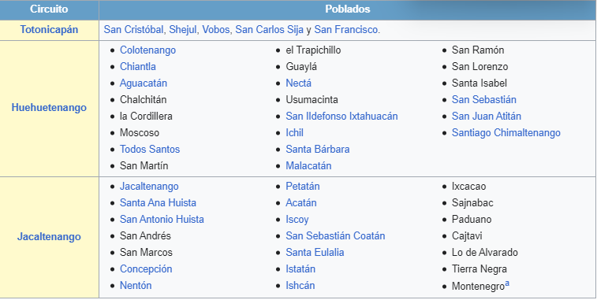

La antigua Totonicapán, fue la segunda provincia en importancia del señorío Quiché gobernado desde Q'umarkaj (Utatlán). Fue fundada en las fértiles planicies de Patzac. Se cree que la antigua población se llamó Otzoyá, que quiere decir lugar de los Pescaditos, sin embargo no se ha encontrado vestigios de la misma. Después de cierto tiempo dejaron este lugar y se asentaron en el llamado Chuimequená (lugar del agua caliente), que es el nombre con el que se le conoce entre los indígenas. Posteriormente se trasladó al lugar donde se encuentra actualmente, muy cerca del antiguo Chuimequená.
Levantamiento indígena de Totonicapán
A principios del siglo xix, Totonicapán formó parte de la provincia del mismo nombre o también llamada Huehuetenango. En su territorio, durante la época colonial, estallaron los motines de indígenas más trascendentales del Reino de Guatemala. Un suceso que es necesario mencionar es que en julio de 1820, estalló entre los indígenas de Totonicapán, participando los municipios de Momostenango, Santa María Chiquimula, San Francisco el Alto, San Andrés Xecul, San Bartolo Aguas Calientes, San Cristóbal Totonicapán y la propia cabecera, una sublevación en la que desconocieron a las autoridades españolas, la cual fue encabezada por Atanasio Tzul y Lucas Aguilar, coronando a Tzul como rey de los K'iche's. Desde entonces se reconoce a la cabecera como Ciudad Prócer. Esta sublevación se atribuye especialmente a la imposición de los Reales Atributos que habían sido suprimidos por la Constitución liberal de Cádiz de 1812 pero que habían sido restituidos cuando el rey Fernando VII reinstaló el absolutismo en España en 1816. Durante el levantamiento, Atanasio Tzul se puso la corona del señor San José y a su esposa, Felipa Soc, le puso la corona de Santa Cecilia. El Reinado de Tzul duró solamente 29 días, pero fueron de zozobra para los criollos, a quienes amenazó con darles muerte.
Tras la independencia de Centroamérica
En 1822, tras la Independencia de Centroamérica en septiembre anterior y la anexión al imperio mexicano de Agustín de Iturbide, se dividió el territorio centroamericano en tres comandancias generales, siendo una de ellas la de Chiapas, a la cual pertenecía la Alcaldía Mayor de Totonicapán. Tras derrumbarse el imperio de Iturbide en 1823, se formaron las Provincias Unidas del Centro de América, de las que pasó a formar parte Totonicapán puesto que Chiapas permaneció anexado a México. El Estado de Guatemala fue definido de la siguiente forma por la Asamblea Constituyente de dicho estado que emitió la constitución del mismo el 11 de octubre de 1825: «el estado conservará la denominación de Estado de Guatemala y lo forman los pueblos de Guatemala, reunidos en un solo cuerpo. El estado de Guatemala es soberano, independiente y libre en su gobierno y administración interior.»
Posteriormente, el 15 de febrero de 1838 se formó el Estado de Los Altos o Sexto Estado, en donde los indígenas fueron obligados a pagar tributos que ya no estaban vigentes en el Estado de Guatemala. El 19 de marzo de 1840, el Estado de Guatemala -ya controlado por los conservadores y el líder campesino Rafael Carrera y Turcios recuperó el Estado de Los Altos. El departamento moderno fue creado por decreto n.º 72 del 12 de agosto de 1872 durante el gobierno liberal del general Miguel García Granados.